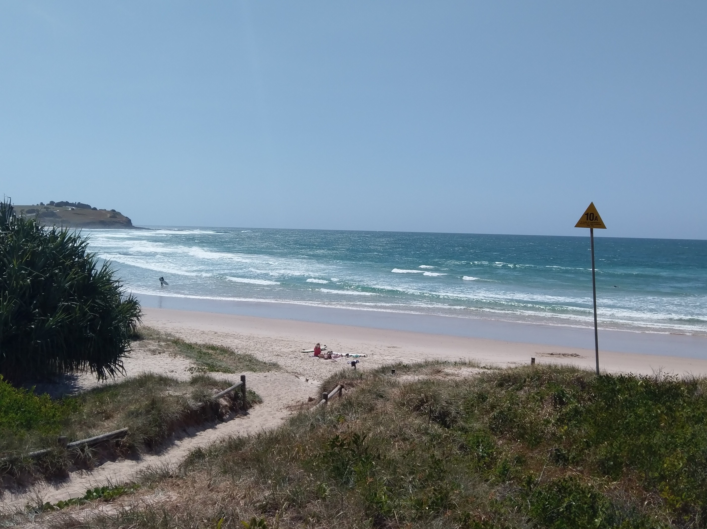
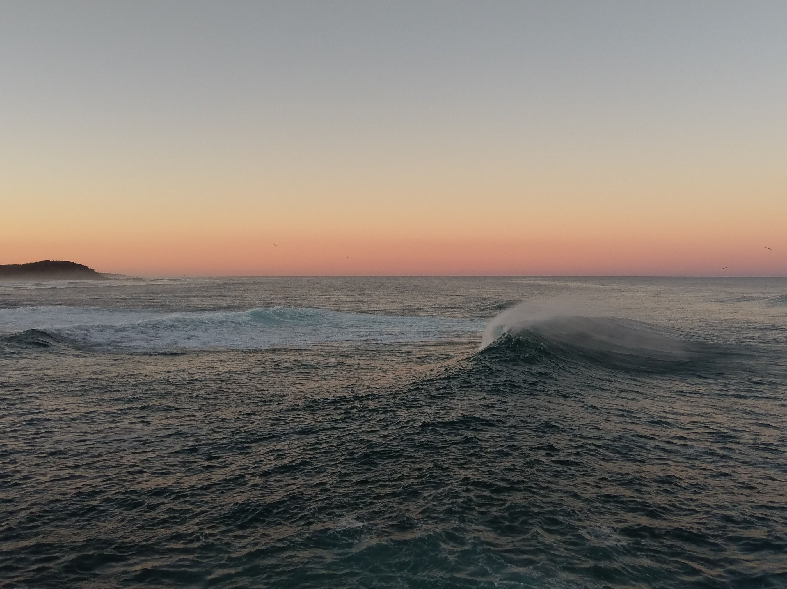
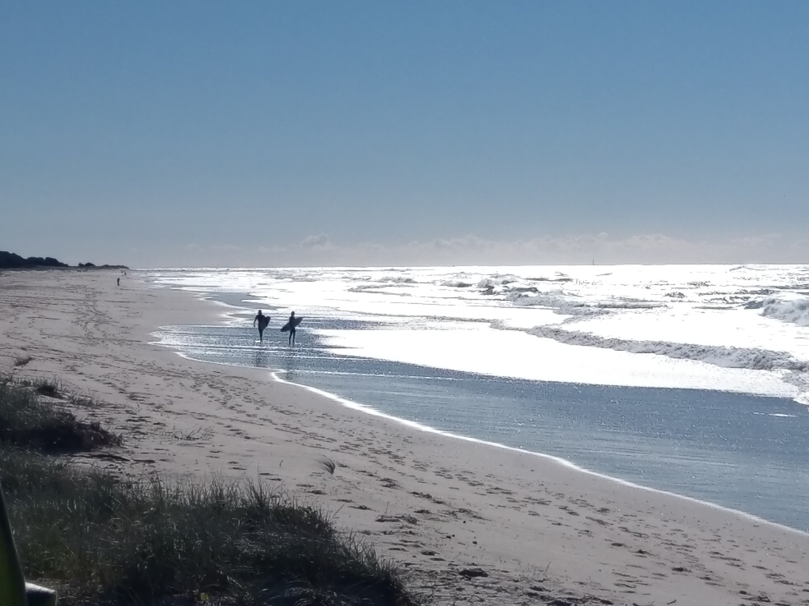

A Day in the Life of a Remote Data Scientist
Yanir Seroussi
yanirseroussi.com | @yanirseroussi | linkedin.com/in/yanirseroussi
Motivation
What people have got to realise is that houses are much cheaper in Tamworth, houses are much cheaper in Armidale, houses are much cheaper in Toowoomba.
Outline
- Preliminaries
- A day in the life
- Pros and cons
Preliminaries
Defining data science (again)
...we can define data science as a field that deals with description, prediction, and causal inference from data in a manner that is both domain-independent and domain-aware, with the ultimate goal of supporting decisions.
My path so far
- Haifa, Israel: Technion BSc, Intel, Qualcomm
- Melbourne/Sydney: Monash PhD, Google, Giveable
- Sydney: Next Commerce, consulting, own projects, Car Next Door
- Ballina: Automattic
Ballina?

Automattic?
- Main products: WordPress.com, Jetpack, WooCommerce
- Fully distributed: 800+ employees, no central office
- One of the few companies that hire remote data scientists
- Longest held position since 2012
Further reading: My 10-step path to becoming a remote data scientist with Automattic
A day in the life
Morning boxland
Epic break time
Afternoon quiet work

Actual work examples
- Recent: pipe and RR++
- Previously: Elfbot and CEMAP
- Others: data requests and products
Further reading: data.blog
True flextime: YMMV
- My chronotype: morning person
- Not a team lead = fewer meetings
- Easy to work too little or too much
The joy of meetups


Pros and cons
For employees
Pros:
- True flextime
- Quiet time for deep asynchronous work
- Free meetup trips
- Learn from people with diverse backgrounds
Cons:
- Hard to maintain work/life boundaries
- Potential isolation
- Long flights and jetlag
- More cultural differences and sensitivities
Further reading: Reflections on remote data science work
For employers
Pros (if done well):
- Happier employees
- Calmer work
- Hire anywhere
- Spend less on offices and on-site perks
Cons (if done badly):
- Isolated employees
- Communication breakdowns
- Less sense of control
- Spend more on meetups and home-based perks
Conclusion
The future is distributed
You don't have to...
...work for a bank
...pay millions to live in "Sydney"
...move to Tamworth
The future is up to us
Ask recruiters and employers for remote options
Let your teams work remotely, at least part-time
Strive for asynchronous calm conditions